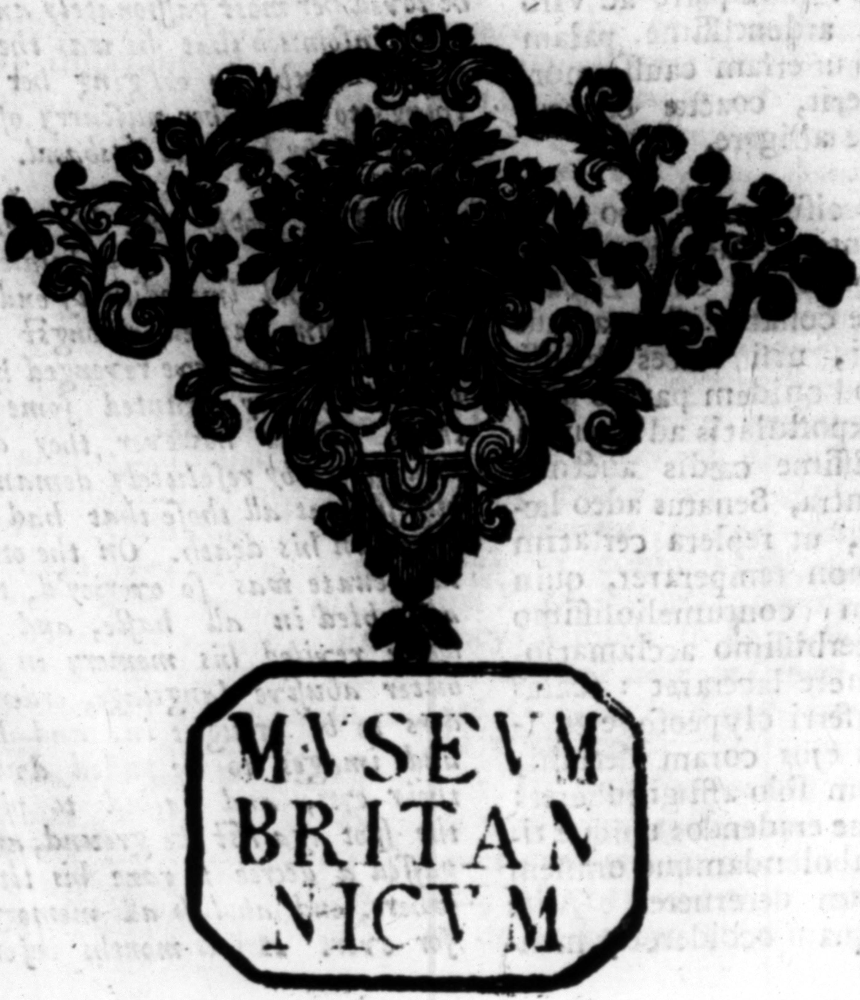
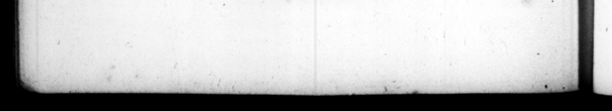

2 0 5 * A | in Capitolio elogu-' ſti E $4: Tyre t Nec defuir * » why Wonne e. ne Crow; that lately berchrd en 'Tarpey's un, de nor hy en wes wells N Iptarcriam, Domirlan —— 1 l | — 4 cervicem àuream chaa pro._certoque bat — —.— 2 rei ea fa ka4 n. fiche ſane brevi eve nit abſtinentia & moderatiaie mk Y * . © #4 . * * * * * — +4 4 , . FS A 1 f | . | I 8 x * E p . * = * g E 4 ” 4 G Lk. * . o - - / > 7 0 : " HI % py &% Gu A AM — * „ A 3p tend fred eu hs

